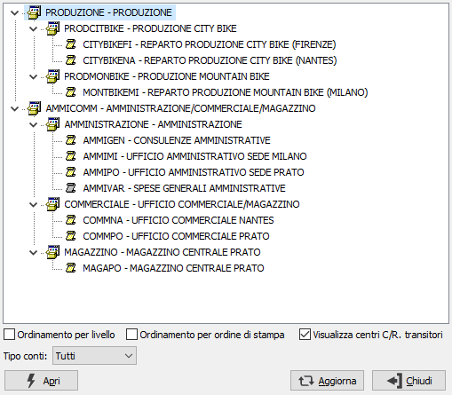

Visualizzazione piano dei conti analitico
Il programma consente di visualizzare in formato grafico la struttura del piano dei conti analitico, permettendo l'esplosione e la manutenzione dei singoli mastri e conti. È disponibile anche l'uso dei tasti stampa ed anteprima di stampa per effettuare la stampa completa del piano dei conti analitico.

Agendo con il mouse sul segno "+" sono visualizzati i centri di costo/ricavo oppure ulteriori mastri relativi al mastro principale. Premendo il tasto "*" del tastierino numerico sarà possibile espandere tutto il mastro. Il tasto "Apri" consente di accedere alla manutenzione del mastro o del centro; il tasto "Aggiorna" consente di aggiornare la visualizzazione nel caso in cui altri utenti stiano inserendo altri mastri o centri. Il tasto "Chiude" termina l'esecuzione del programma.
Mettendo la spunta sul campo "Ordinamento per livello" oppure sul campo "Ordinamento per ordine di stampa" è possibile modificare il metodo di visualizzazione in relazione al livello oppure all'ordine di stampa del mastro o del centro. Mettendo la spunta sul campo "Visualizza centri C/R. transitori" è possibile aggiungere o togliere dalla visualizzazione i centri di tipo transitorio, riconoscibili perchè identificati dalla pergamena grigia. Al momento della spunta di uno dei campi sopra citati la visualizzazione sarà nuovamente ricompattata al primo livello come all'ingresso del programma.
Selezionando stampa oppure anteprima di stampa verrà effettuata la stampa completa del piano dei conti analitico.